Nährstoffmangel und Überschuss
Blattsymptome können Hinweise geben, sind allein aber selten eindeutig. Vergleiche die sichtbaren Symptome mit den Nährstoffprofilen und prüfe auch Wurzelraum, pH und Bewässerung.
Ein Ort für alle, die Cannabispflanzen besser verstehen möchten. Keimwerk bündelt Informationen, erklärt Zusammenhänge und wächst Schritt für Schritt zu einer übersichtlichen Wissensplattform.
Wähle einen Wissensbereich aus und entdecke hilfreiche Informationen, verständliche Erklärungen und übersichtliches Pflanzenwissen. Die verschiedenen Bereiche helfen dir dabei, Themen besser zu verstehen und Zusammenhänge zu erkennen.
Hier findest du eine Übersicht zu Schädlingen an Pflanzen. Der Bereich soll helfen, mögliche Schädlinge anhand von Aussehen, Symptomen und typischen Schadbildern zu erkennen. Zu den Einträgen gehören Informationen zur visuellen Erkennung und Hinweise zur genaueren Kontrolle. Die Inhalte sind so gegliedert, dass du einzelne Profile später leicht finden und vergleichen kannst.
12 SchädlingsprofileHier findest du Nützlinge, ihre Erkennungsmerkmale, ihre Wirkung und Hinweise zu ihrem Einsatz gegen Pflanzenschädlinge.
11 NützlingsprofileHier findest du typische Hinweise auf Nährstoffmängel und Überschüsse, anschauliche Pflanzenbilder sowie Hinweise zur Diagnose mit pH, EC und Wurzelzustand.
12 NährstoffprofileSymptome auswählen, mögliche Ursachen vergleichen und passende Informationen samt Originalbildern aus dem Nährstofflexikon anzeigen lassen.
Regelbasierte OrientierungFinde Zusammenhänge zwischen Nährstoffen, Symptomen, Wasserwerten, Schädlingen und Nützlingen – mit direkten Verweisen auf die vorhandenen Keimwerk-Lexika.
Verknüpfte WissensbereicheStelle Fragen zu Cannabis-Pflanzenphysiologie, Nährstoffen, pH/EC, Substrat, Symptomen oder Schädlingen. Der Assistent nutzt passende Keimwerk-Inhalte als Kontext und verweist auf die entsprechenden Bereiche.
Fragen stellen · Quellen öffnenVerbinde Tagebuch, Messwerte, Pflegeereignisse und optional Pflanzenfotos zu einer chronologischen Auswertung mit Trends, Datenlücken und einer vorsichtigen KI-Einschätzung.
Messwerte · Verlauf · ZusammenhängeKeimwerk ist ein Wissensprojekt rund um Cannabispflanzen und ihre Pflege. Unser Ziel ist es, Beobachtungen verständlicher zu machen und Informationen in klar gegliederten Bereichen bereitzustellen.
Erkennungsmerkmale und Fachbegriffe in klarer Sprache.
Wissen nach Themen geordnet und leicht auffindbar.
Neue Inhalte werden nach und nach ergänzt.
Entdecke, wie Symptome, Nährstoffe, Wasserqualität, Schädlinge und Nützlinge zusammenhängen. Die Verknüpfungen führen in bereits vorhandene Keimwerk-Bereiche – sie ersetzen keine Diagnose und stellen mögliche Zusammenhänge nicht als sichere Ursache dar.
Interaktive WissensnavigationAlle Themen werden angezeigt.
Blattsymptome können Hinweise geben, sind allein aber selten eindeutig. Vergleiche die sichtbaren Symptome mit den Nährstoffprofilen und prüfe auch Wurzelraum, pH und Bewässerung.
Wasserwerte und Bedingungen im Wurzelraum beeinflussen, wie Nährstoffe verfügbar sind. Ein einzelner Messwert sollte immer zusammen mit Substrat, Messmethode und Pflanzenbild eingeordnet werden.
Nutze den Mängel-Finder, um Beobachtungen strukturiert einzuordnen. Prüfe mehrere Ursachen, statt allein aus einer Blattverfärbung auf einen bestimmten Nährstoffmangel zu schließen.
Fraßspuren, Gespinste, silbrige Stellen oder kleine Punkte können Hinweise auf Schädlinge sein. Vergleiche die Erkennungsmerkmale und kontrolliere insbesondere Blattunterseiten und junge Triebe.
Wenn ein Schädling sicherer bestimmt wurde, lassen sich passende Gegenspieler prüfen. Die Eignung hängt unter anderem von Schädlingsart, Entwicklungsstadium und Umgebungsbedingungen ab.
Datum, Fotos, Messwerte und Pflegeereignisse helfen, Veränderungen zeitlich einzuordnen. Ein zeitlicher Zusammenhang ist ein Hinweis zur Prüfung, aber noch kein Beweis für eine Ursache.
Stelle Fragen rund um Cannabispflanzen. Der Assistent sucht zuerst in den vorhandenen Keimwerk-Lexika und erklärt Zusammenhänge verständlich. Du kannst nach einer einfachen Erklärung fragen oder gezielt fachliche Details anfordern.
Keimwerk-Fachinhalte als KontextAnalysiere gespeicherte Tagebucheinträge, Messwerte und Pflegeereignisse im zeitlichen Zusammenhang. Keimwerk zeigt zuerst eine nachvollziehbare lokale Übersicht und kann anschließend eine KI-Einschätzung erstellen.
Projektverlauf statt EinzelwertFür die KI-Auswertung werden Projektdaten und die ausgewählten Tagebucheinträge an den Keimwerk-Worker übermittelt. Dazu gehören auch deine Notizen sowie Messwerte. Bilder werden nur gesendet, wenn du das Kästchen aktivierst. Speichere oder exportiere deine Daten vor größeren Änderungen vorsichtshalber als Sicherung.
Wähle ein gespeichertes Grow-Projekt aus. Die lokale Übersicht erscheint ohne KI-Aufruf.
Min., Durchschnitt und Max. beruhen nur auf vorhandenen Zahlenwerten. Der Verlauf vergleicht den ersten und letzten Messpunkt; daraus ergibt sich keine automatische Bewertung als gut oder schlecht.
| Messgröße | Einträge | Minimum | Durchschnitt | Maximum | Erster → letzter Wert |
|---|
Die KI stellt mögliche Zusammenhänge und nächste Prüfungen dar. Sie verändert weder deine Tagebucheinträge noch deine Dünger- oder Wasserwerte.
Informationen zu Erkennungsmerkmalen, Symptomen, Schäden und typischen Hinweisen zu Pflanzenschädlingen.
12 Schädlingsprofile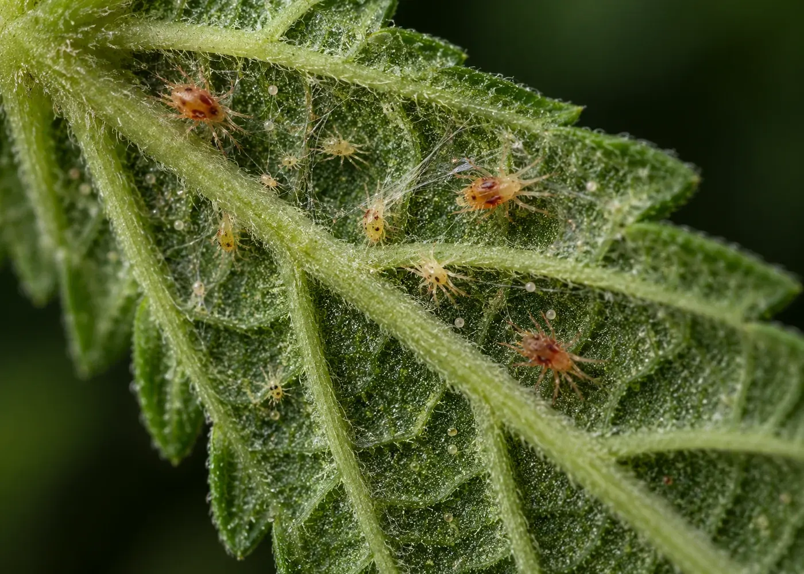
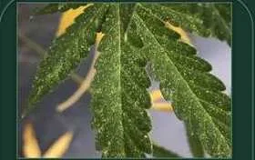
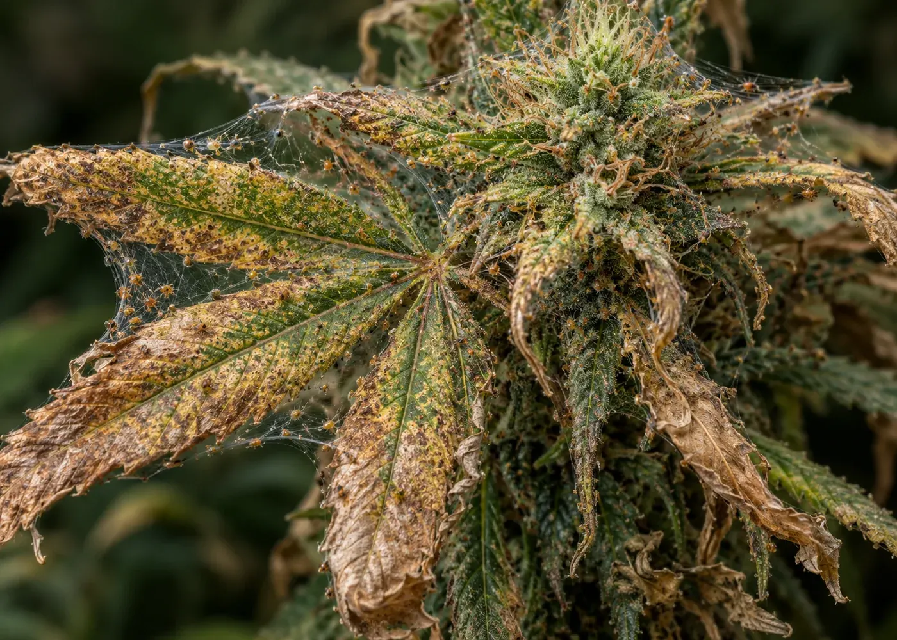
Aussehen: Sehr klein und spinnenartig; weißlich, gelblich, grünlich oder rötlich. Oft an Blattunterseiten.
Symptome: Feine Gespinste und viele winzige gelbe oder weiße Punkte auf den Blättern.
Schäden: Saugen Pflanzenzellen aus, beeinträchtigen die Blattfunktion und können Blattverlust verursachen.
Praxis-Hinweis: Blattunterseiten regelmäßig mit einer Lupe kontrollieren.
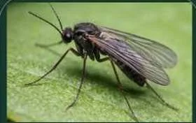

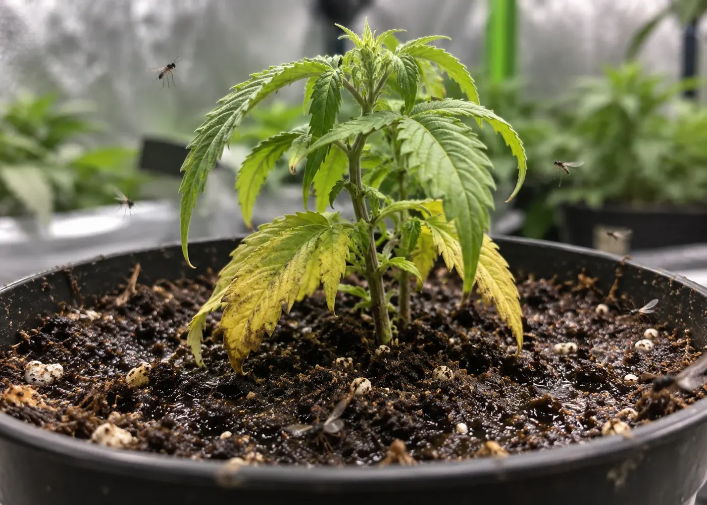
Aussehen: Kleine dunkle Fliegen; Larven sind weißlich und durchscheinend und leben im feuchten Substrat.
Symptome: Fliegen steigen beim Gießen oder Bewegen des Substrats auf; Sämlinge können schwach wachsen oder welken.
Schäden: Larven können feine Wurzeln und Wurzelhaare anfressen.
Praxis-Hinweis: Substrat auf Larven prüfen und dauerhaft zu nasse Erde vermeiden.
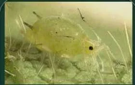
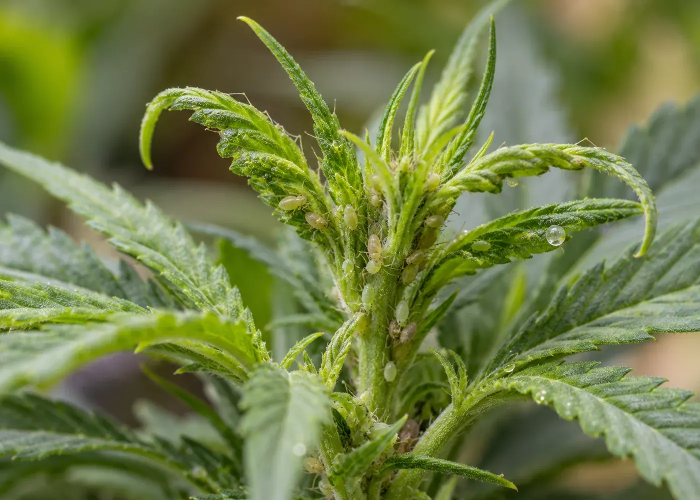
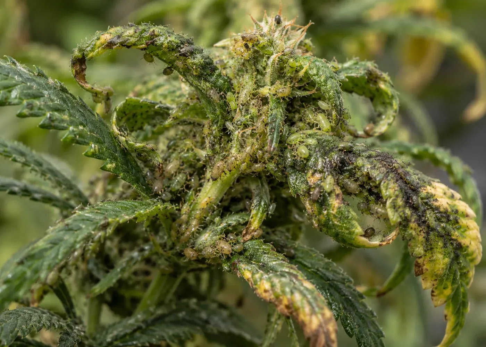
Aussehen: Kleine birnenförmige Tiere, grün, schwarz, gelblich oder rosa, oft in Gruppen an jungen Trieben und Blattunterseiten.
Symptome: Eingerollte Blätter, klebriger Honigtau und manchmal schwarzer Rußtau.
Schäden: Saugen Pflanzensaft, schwächen die Pflanze; manche übertragen Pflanzenviren.
Praxis-Hinweis: Triebe und Blattunterseiten auf Läuse, Honigtau, Ameisen und schwarze Beläge prüfen.


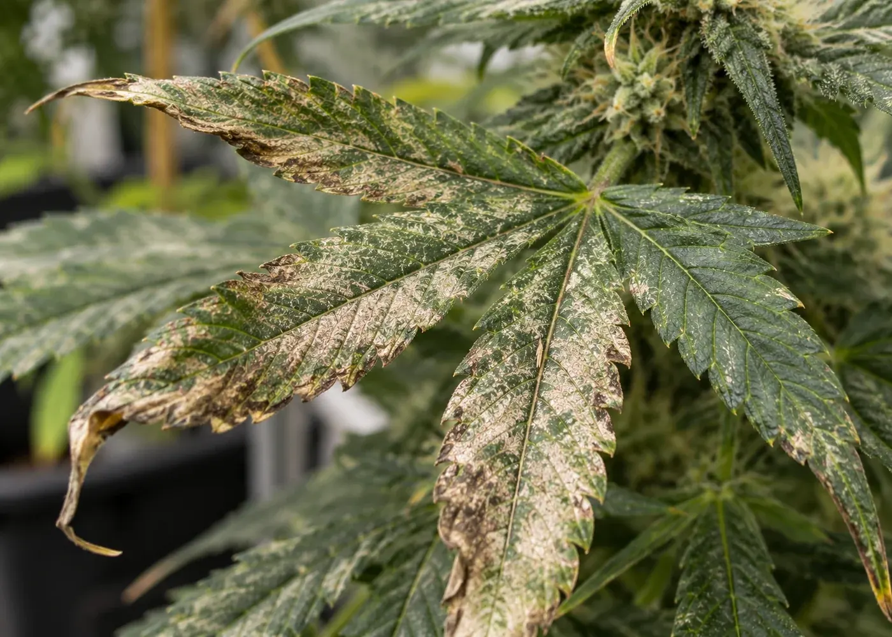
Aussehen: Schlanke, längliche, gelbliche, braune oder schwarze Insekten, die sich schnell bewegen.
Symptome: Silbrig-weiße Fraßspuren sowie kleine schwarze Kotpunkte.
Schäden: Schaben und saugen Pflanzenzellen aus; es entstehen helle, silbrige Stellen und geschwächtes Blattgewebe.
Praxis-Hinweis: Blattunterseiten und junge Triebe auf silbrige Stellen und schwarze Punkte untersuchen.

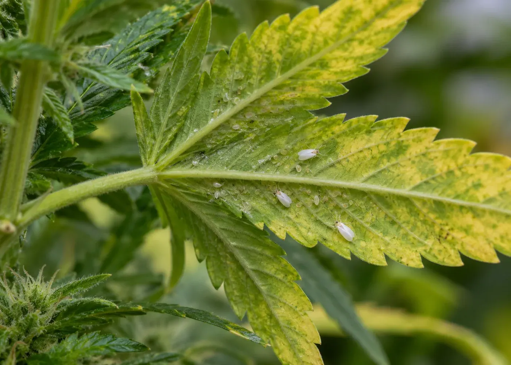

Aussehen: Winzige weiße, mottenähnliche Insekten, häufig auf Blattunterseiten. Bei Bewegung fliegen sie oft auf.
Symptome: Honigtau, gelbliche Blätter sowie sichtbare erwachsene Tiere oder Nymphen.
Schäden: Saugen Pflanzensaft; Honigtau kann Rußtau begünstigen.
Praxis-Hinweis: Blattunterseiten auf weiße Tiere, Nymphen und klebrige Rückstände kontrollieren.


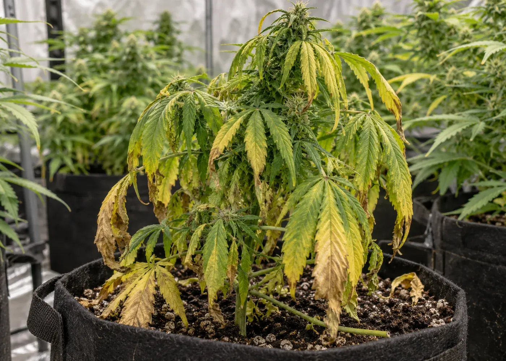
Aussehen: Kleine, weiche, weißliche bis gelbliche, teils wachsige Tiere an Wurzeln oder am Wurzelhals.
Symptome: Welken und Vergilben trotz ausreichender Wasserversorgung, oft mit mangelähnlichem Schadbild.
Schäden: Saugen an den Wurzeln und schwächen Wurzelsystem und Pflanzenvitalität.
Praxis-Hinweis: Bei unerklärlichem Welken oder mangelähnlichen Symptomen die Wurzeln kontrollieren.
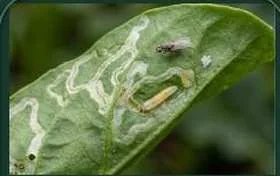
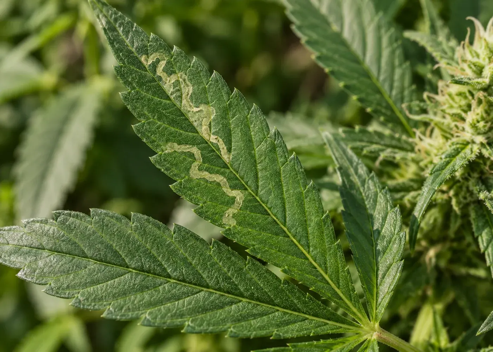
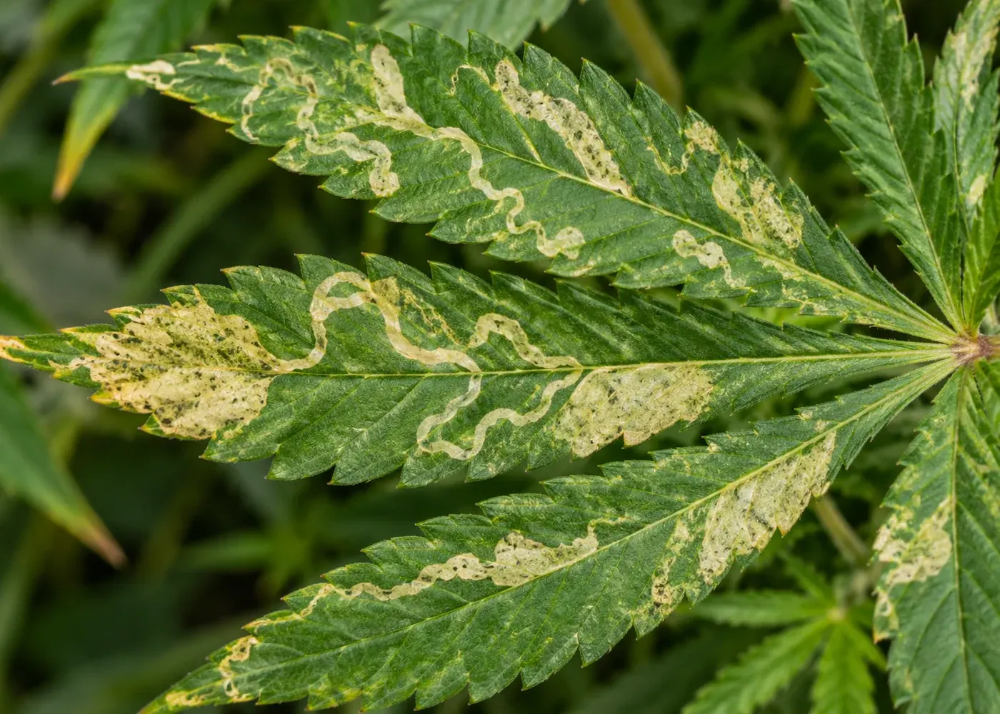
Aussehen: Kleine Fliegen; Larven leben innerhalb der Blattschichten.
Symptome: Schlangenförmige weiße bis durchscheinende Miniergänge. Später können Blattbereiche aufhellen und vertrocknen.
Schäden: Larven fressen Blattgewebe und verringern die nutzbare Blattfläche für die Photosynthese.
Praxis-Hinweis: Miniergänge früh erkennen, stark befallene Blätter entfernen und neue Spuren kontrollieren.
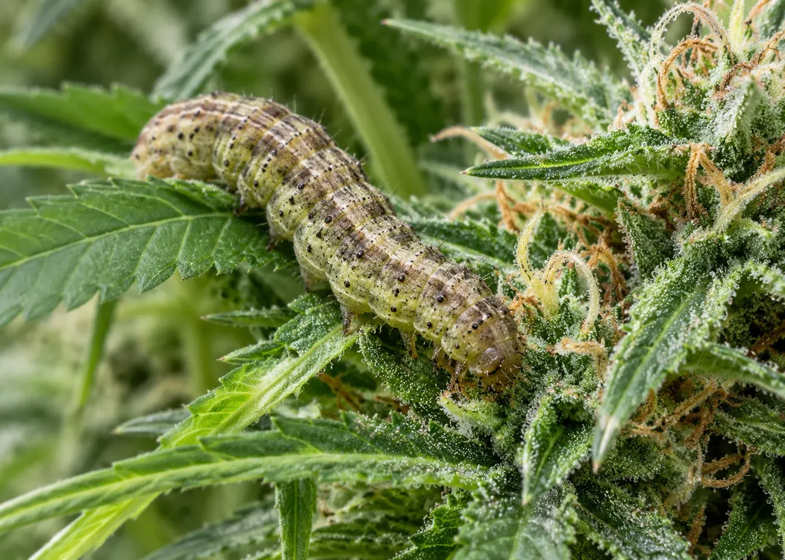

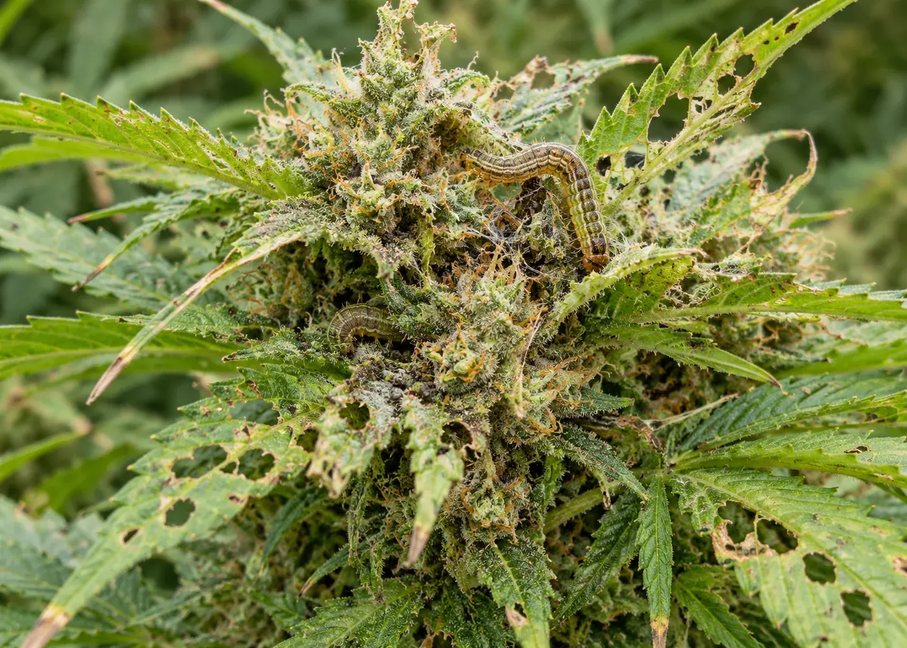
Aussehen: Weiche, längliche, grünliche oder braune, teils gemusterte Raupen; sie können sich in Blüten verstecken.
Symptome: Angeknabberte Blattränder, Löcher, Kotspuren und Fraß an Blüten mit welkenden oder braunen Gewebeteilen.
Schäden: Fressen Blätter und Blüten. Beschädigtes Blütengewebe kann anfälliger für Botrytis sein.
Praxis-Hinweis: Blüten prüfen und stark beschädigte Teile früh erkennen und entfernen.
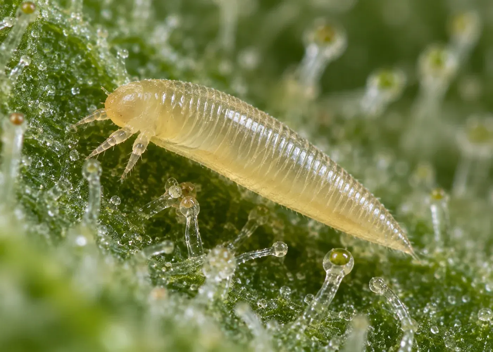


Aussehen: Mikroskopisch kleine, längliche, zigarrenförmige, blassgelbe bis rosa Milben an Trieben, Stängeln und Blattunterseiten.
Symptome: Feine Sprenkelung, bronzene bis rostige Verfärbungen, verformter junger Wuchs und nach oben gerollte Blattränder.
Schäden: Können Wachstum, Ertrag und Blütenqualität beeinträchtigen.
Praxis-Hinweis: Eine starke Lupe oder ein Mikroskop hilft bei der Kontrolle.
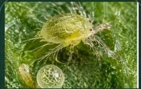

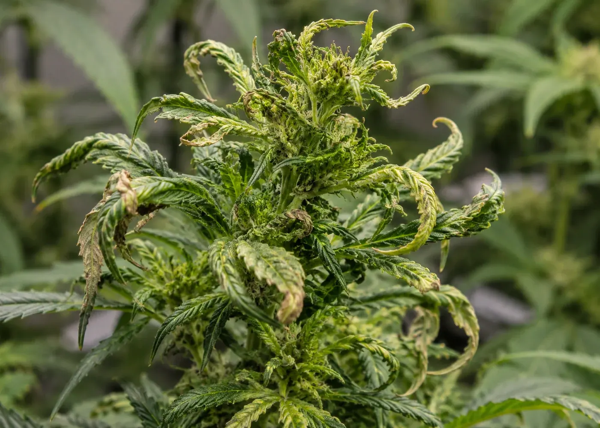
Aussehen: Etwa 0,25 mm große, ovale, gelblich-grüne Milben. Weibchen können einen hellen Streifen haben; sie sind schwer zu erkennen.
Symptome: Junge Blätter sind gekräuselt, gebogen, verdickt oder bronzefarben; Knospen können deformiert sein.
Schäden: Junger Wuchs wird gehemmt oder bleibt aus.
Praxis-Hinweis: Frischen Wuchs und Knospen kontrollieren; eine Lupe mit etwa 20-facher Vergrößerung oder ein Mikroskop kann helfen.
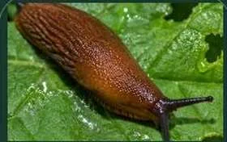
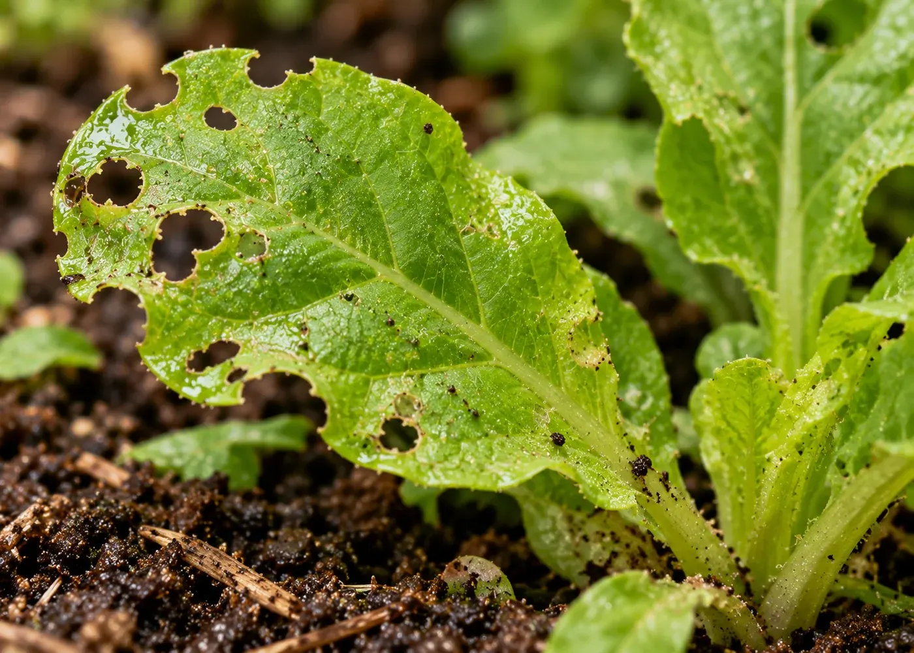
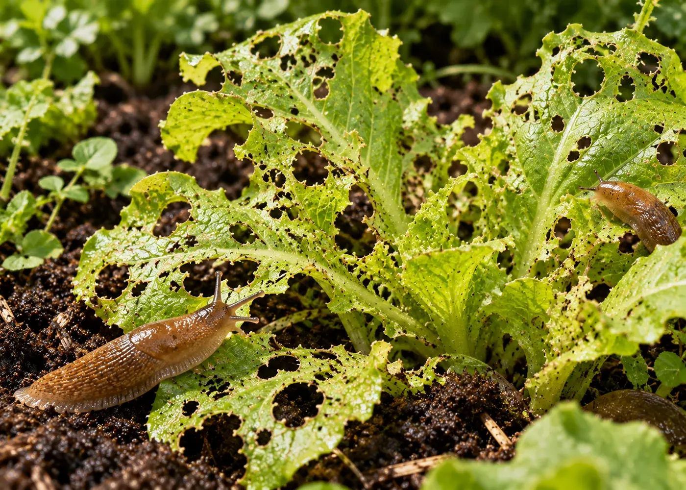
Aussehen: Weiche, häufig braune oder graue Tiere. Nacktschnecken und Schnegel sind oft nachts aktiv.
Symptome: Unregelmäßige ausgefranste Löcher, Fraß an Blatträndern und glänzende Schleimspuren.
Schäden: Besonders bei Sämlingen kann in kurzer Zeit viel Blattfläche verloren gehen.
Praxis-Hinweis: Abends, früh morgens oder nach Regen sowie unter Töpfen, Brettern und Mulch kontrollieren.
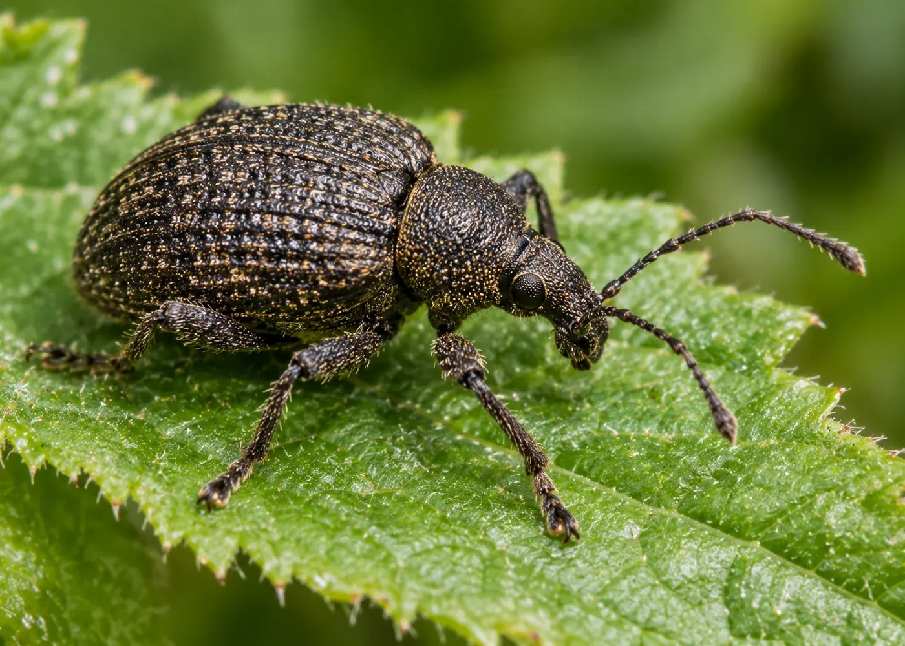

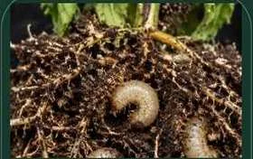
Aussehen: Dunkler, flugunfähiger Käfer; Larven sind weißlich, beinlos und haben einen braunen Kopf.
Symptome: Halbkreisförmige Fraßbuchten an Blatträndern. Wurzelschäden können zusätzlich Welken und schwaches Wachstum verursachen.
Schäden: Erwachsene Käfer fressen Blätter, Larven schädigen Wurzeln. Junge Pflanzen sind besonders gefährdet.
Praxis-Hinweis: Blattränder nachts kontrollieren; bei Welken Wurzeln und Wurzelballen prüfen.
Erkennungsmerkmale, Wirkung und praktische Hinweise zu Nützlingen und ihrem Einsatz.
11 NützlingsprofileSpezialisierter Jäger von Spinnmilben.
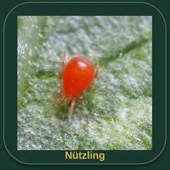
Aussehen: Etwa 0,5 mm groß, birnenförmig und meist orange bis rot. Bewegt sich deutlich schneller als viele Pflanzmilben.
Wirkung: Frisst Spinnmilben, vor allem Eier und junge Stadien.
Praxis-Hinweis: Nicht ohne Beute ausbringen: Ohne Spinnmilben wandert sie häufig ab. Geeignete Wärme und Luftfeuchte fördern die Wirkung.
Spinnmilben-Gegenspieler mit höherer Toleranz gegenüber Wärme und trockeneren Bedingungen.

Aussehen: Sehr kleine, hellgelbliche bis orangefarbene Raubmilbe; mit bloßem Auge kaum sicher zu erkennen.
Wirkung: Frisst verschiedene Spinnmilben-Arten; je nach Situation auch andere Milben, Thripse oder Pollen.
Praxis-Hinweis: Interessant bei wärmeren oder etwas trockeneren Bedingungen und niedrigerer Spinnmilben-Dichte.
Generalistische Raubmilbe, besonders interessant bei Thrips- und Weiße-Fliegen-Druck.
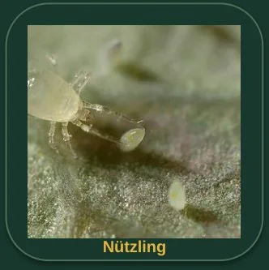
Aussehen: Winzige, blassgelbliche Raubmilbe; unter Vergrößerung besser erkennbar.
Wirkung: Frisst vor allem junge Thripse sowie Eier und Larven der Weißen Fliege. Pollen kann die Population stützen.
Praxis-Hinweis: Für vorbeugende und frühzeitige biologische Kontrolle interessant. Wirkung hängt von Temperatur und Beutedruck ab.
Bodenbewohnende Raubmilbe gegen Trauermückenlarven und Thrips-Puppen.

Aussehen: Sehr kleine, helle bis bräunliche Raubmilbe im Boden und an der Substratoberfläche.
Wirkung: Frisst Eier, Larven und Puppen von Trauermücken sowie Thrips-Puppen und weitere kleine Bodenorganismen.
Praxis-Hinweis: Besonders als vorbeugender Boden-Nützling interessant. Gleichmäßig ins Substrat einbringen.
Vor allem die Larven sind aktive Räuber von Blattläusen und weiteren weichhäutigen Schädlingen.
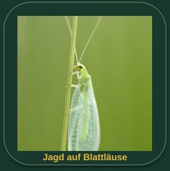
Aussehen: Die erwachsene Florfliege ist zartgrün und besitzt durchsichtige Flügel. Larven sind länglich und haben kräftige Greifkiefer.
Wirkung: Die Larven fressen Blattläuse, Thripse und andere kleine Beutetiere.
Praxis-Hinweis: Besonders bei Blattlausproblemen nützlich. Blühpflanzen mit Nektar und Pollen helfen erwachsenen Tieren.
Winziger Parasitoid, dessen Larve sich in Blattläusen entwickelt.
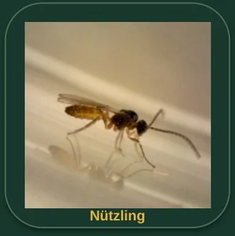
Aussehen: Sehr kleine, schlanke Schlupfwespe mit dunklem Körper; Weibchen suchen Blattläuse aktiv ab.
Wirkung: Parasitierte Blattläuse sterben ab und werden rundlich, aufgebläht und hellbraun bis beige („Blattlaus-Mumien“).
Praxis-Hinweis: Besonders für frühe bis mittlere Blattlauspopulationen geeignet. Breite Pestizidwirkung vermeiden.
Wichtiger Parasitoid der Weißen Fliege, besonders im geschützten Anbau.

Aussehen: Etwa 0,5 mm klein; Weibchen mit dunkel gefärbtem Vorderkörper und gelblichem Hinterleib.
Wirkung: Parasitierte Nymphen der Gewächshaus-Weißen Fliege werden dunkel bis schwarz; bei Bemisia tabaci eher bräunlich.
Praxis-Hinweis: Am wirksamsten bei frühem bis mittlerem Befall. Blattunterseiten regelmäßig kontrollieren.
Räuberische Blumenwanze, die Thripse in verschiedenen Entwicklungsstadien erbeutet.

Aussehen: Kleine schwarzbraune Wanze mit hellem Flügelmuster; auch die Nymphen sind räuberisch.
Wirkung: Erwachsene und Nymphen fressen Thripse. Pollen kann als Zusatznahrung dienen.
Praxis-Hinweis: Interessant bei Thripsdruck und in blühenden Beständen. Unter etwa 20 °C arbeitet die Art langsamer.
Mikroskopisch kleine Nematoden, die geeignete Schadinsekten im Boden parasitieren.

Aussehen: Mikroskopisch kleine, fadenförmige Fadenwürmer; nicht mit bloßem Auge sichtbar.
Wirkung: Werden vor allem gegen bodenlebende Larven eingesetzt, insbesondere Trauermückenlarven.
Praxis-Hinweis: Für die Anwendung müssen die Hinweise des jeweiligen Präparats und die Feuchtigkeitsbedingungen beachtet werden.
Nützliche Käfer, deren Larven und erwachsene Tiere je nach Art Blattläuse fressen können.

Aussehen: Runde Käfer mit harten Flügeldecken; die Larven sind länglich und sehen deutlich anders aus als die erwachsenen Tiere.
Wirkung: Blattläuse sind eine wichtige Beute vieler Marienkäferarten.
Praxis-Hinweis: Als allgemeine Nützlinge fördern; konkrete Wirksamkeit hängt von Art und Situation ab.
Nützliche Insekten; die Larven vieler Arten fressen Blattläuse.
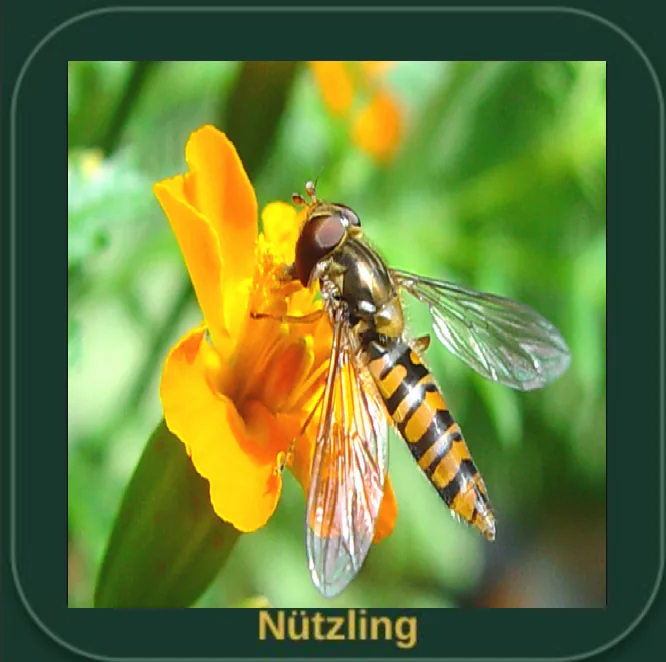
Aussehen: Erwachsene Schwebfliegen erinnern oft an Wespen, können aber nicht stechen. Die Larven sind meist wurmförmig und ohne Beine.
Wirkung: Larven vieler Arten ernähren sich von Blattläusen; erwachsene Tiere nutzen Blüten als Nahrungsquelle.
Praxis-Hinweis: Blühpflanzen können erwachsene Schwebfliegen unterstützen. Die Wirkung ist artabhängig.
Wähle sichtbare Symptome und Pflegebedingungen aus. Der Finder vergleicht die Angaben mit Regeln und verknüpft passende Ergebnisse mit den Originaleinträgen und Beispielbildern aus dem bestehenden Über- und Unterdüngungslexikon.
Regelbasierte Orientierung + optionale Gemini-KI-DiagnoseOptional: Wähle ein vorhandenes Grow-Projekt aus. Keimwerk kann gespeicherte Messwerte und letzte Beobachtungen als zusätzliche Hinweise übernehmen. Bestehende Einträge werden dabei nicht verändert.
Wähle mindestens ein sichtbares Symptom aus.
Das Bild wird zur Analyse an den Keimwerk-Diagnosedienst gesendet. Entferne vor dem Upload persönliche oder identifizierende Bildinhalte.
Bitte bestätige die Sicherheitsprüfung, bevor du die KI-Diagnose startest.
Typische Anzeichen von Nährstoffmangel und -überschuss, anschauliche Pflanzenbilder und eine strukturierte Hilfe zur besseren Einordnung.
12 NährstoffprofileKlicke auf einen Bereich, um direkt dorthin zu springen.
Welche Blätter sind betroffen – ältere oder jüngere? Beginnt der Schaden an Spitzen, Rändern oder zwischen den Blattadern?
pH, EC beziehungsweise Salzbelastung, Feuchtigkeit, Drainage, Ausgangswasser und Wurzeln gemeinsam beurteilen.
Erst nach der Einordnung korrigieren. Nicht mehrere Düngerprodukte gleichzeitig auf Verdacht ergänzen.
Stickstoffmangel zeigt sich häufig zuerst an älteren Blättern.

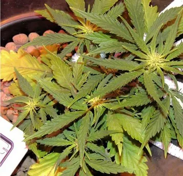
Chlorose beginnt oft an älteren Blättern; die Vergilbung breitet sich von den Spitzen nach innen aus. Bei starkem Mangel kann Blattfall auftreten und Wachstum sowie Ertrag können abnehmen.
Sehr dunkelgrüne Blätter, viel weiche Blattmasse und üppiges Wachstum können auf zu viel Stickstoff hindeuten. Triebe können schwächer und bruchanfälliger werden; Ertrag oder Qualität können leiden.
N-Mangel gezielt und schrittweise ausgleichen. Bei vermutetem Überschuss die Zufuhr stoppen oder reduzieren und die Salzbelastung prüfen.
Dunkle oder violette Färbungen sind Hinweise, aber nicht eindeutig.
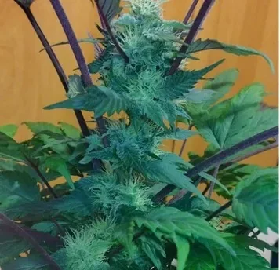

Blattstiele können purpurfarben sein; Blätter wirken mitunter bläulich-grün oder zeigen dunkel kupfer- bis violettfarbene Flecken. Wachstum kann langsam sein und die Blüte verzögert starten.
Ein Phosphorüberschuss kann das Nährstoffgleichgewicht stören und die Aufnahme anderer Elemente beeinflussen. Ähnliche Erscheinungen wie bei Eisen- oder Zinkmangel sind möglich; hoher pH kann Phosphor ebenfalls schlechter verfügbar machen.
Violettfärbung kann auch mit Temperatur, Genetik und Umweltbedingungen zusammenhängen. Nicht blind Phosphor nachdosieren; pH sowie Boden- oder Wasserwerte prüfen.
Blattrandbrand ist ein Hinweis, aber kein sicherer Nachweis für Kaliummangel.
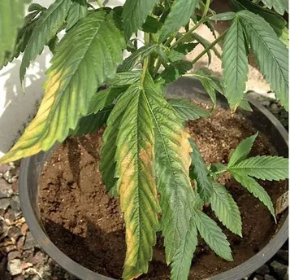

Blattspitzen können rostig-braun und trocken werden; Blattränder bräunen und rollen sich teils auf. Rostfarbene Flecken und schwächere Triebe sind ebenfalls möglich.
Kaliumüberschuss ist visuell schwer von anderen Ungleichgewichten zu unterscheiden. Zu viel Kalium kann die Aufnahme von Calcium, Magnesium, Zink und Eisen behindern. Eine hohe Salzbelastung kann die Aufnahme zusätzlich stören.
Kalium nur bei bestätigtem Bedarf ergänzen. Bei Verdacht auf Überschuss die Düngung reduzieren und die Salz- und Nährstoffbalance prüfen.
Calciumprobleme betreffen häufig das junge Wachstum und die Wurzelspitzen.

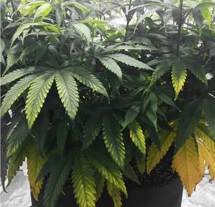
Blätter können verdreht oder gekräuselt sein. Unregelmäßige gelb-braune Flecken sind möglich; Wurzelspitzen können absterben.
Ein Calciumüberschuss kann die Aufnahme oder Balance von Kalium, Eisen, Magnesium, Mangan und Phosphor beeinflussen.
Nicht automatisch CalMag ergänzen, nur weil Blätter gelb werden. Erst prüfen, welches Element tatsächlich fehlt und ob pH oder Wurzeln die Aufnahme stören.
Magnesiummangel zeigt sich oft an älteren Blättern zwischen den Blattadern.
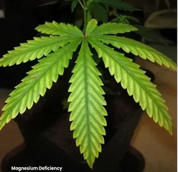
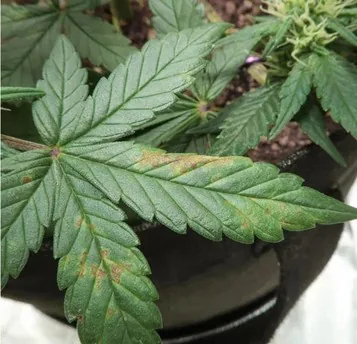
Typisch ist eine interveinale Chlorose: Die Bereiche zwischen den Blattadern hellen auf, während Adern zunächst grüner bleiben. Rostbraune Flecken können an Rändern oder zwischen Adern auftreten.
Zu viel Kalium oder Calcium kann die Magnesiumaufnahme beeinträchtigen. Ein Magnesiumüberschuss ist seltener, kann aber die Calciumversorgung aus dem Gleichgewicht bringen.
Die Position der Symptome und den Dünger- sowie Wasserverlauf gemeinsam bewerten. Magnesium nicht allein anhand gelber Blätter diagnostizieren.
Bor ist in kleinen Mengen nötig; der Bereich zwischen ausreichender Versorgung und Überschuss ist eng.


Junges Wachstum kann verzerrt oder gestaucht wirken. Spitzen können verbrannt aussehen und junge Blätter geschädigt sein.
Bei Überschuss können Blattränder vergilben und Nekrosen entstehen. Zwischen ausreichender und zu hoher Versorgung liegt eine vergleichsweise kleine Sicherheitsmarge.
Bor nicht auf Verdacht hoch dosieren. Erst die Ursache prüfen und bei Unsicherheit Wasser-, Substrat- oder Blattwerte untersuchen.
Eisenmangel betrifft häufig zuerst sehr junge Blätter.


Sehr junge Blätter können zwischen den Blattadern deutlich heller werden, während die Adern länger grün bleiben (interveinale Chlorose). Ein zu hoher pH-Wert kann Eisen blockieren.
Ein Eisenüberschuss kann mit bronzefarbenen Bereichen und dunklen Flecken einhergehen.
Bei einem Mangelbild trotz Düngung zuerst pH-Wert und Wurzelzustand prüfen, statt automatisch mehr Dünger zuzugeben.
Manganmangel kann Eisenmangel ähneln und ist deshalb schwer allein am Blatt zu erkennen.


Jüngere Blätter können zwischen den Adern aufhellen; später können kleine nekrotische Punkte entstehen. Ein hoher pH-Wert kann die Verfügbarkeit senken.
Auch ein Manganüberschuss kann schädlich sein; das Blattbild allein reicht nicht zur sicheren Unterscheidung.
pH, EC und Wurzelzustand mitprüfen und Mangan nicht ohne Bestätigung dosieren.
Molybdänmangel ist selten und kann wie ein Stickstoffproblem aussehen.

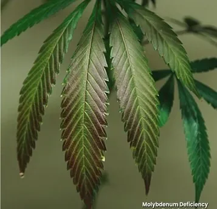
Stickstoffähnliche Chlorosen können auftreten. Blätter können sich außerdem verformen oder einrollen.
Ein Überschuss ist selten. Bei Verdacht sollte eine Wasser-, Substrat- oder Blattprobe geprüft werden.
Ähnliche Chlorosen können andere Ursachen haben. Nicht allein vom Aussehen auf Molybdänmangel schließen.
Schwefelmangel kann optisch einem Stickstoffproblem ähneln.
Aufhellung oder Chlorose und gehemmtes Wachstum können auftreten. Die Symptome beginnen häufig an oberen beziehungsweise jüngeren Blatttrieben.
Ein Schwefelüberschuss gilt als selten. Bei Verdacht soll die Gesamt-Salz- und Nährstoffbalance geprüft werden.
Auf das Alter der betroffenen Blätter achten und Schwefelprobleme nicht nur anhand der Blattfarbe bestimmen.
Zinkmangel kann mit Chlorose und gestauchtem Wachstum einhergehen.
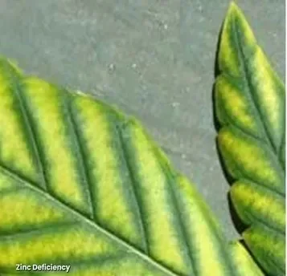

Interveinale Chlorose sowie verkürzte Internodien und gestauchtes Wachstum sind mögliche Hinweise.
Hohe Zinkgehalte können das Wurzelwachstum mindern und die Eisenaufnahme stören.
Bei Verdacht pH, EC und Wasser- beziehungsweise Substratwerte gemeinsam prüfen; Zink nicht auf Verdacht dosieren.
Kupfer ist essenziell, kann bei Überdosierung jedoch problematisch sein.
Junge Blätter können chlorotisch werden; Wachstum kann gestört oder gehemmt sein.
Kupfer kann toxisch wirken, besonders in saurem Medium.
Für Kupfer liegt kein eigenes Pflanzen-Fotobeispiel vor. Bei Verdacht nicht auf Verdacht düngen; Medium und Wasserqualität mitprüfen.
Ähnliche Blattsymptome können unterschiedliche Ursachen haben. Entscheidend ist, Muster, Wurzelraum und Versorgung gemeinsam zu beurteilen.
Ein Nährstoff ist tatsächlich zu wenig vorhanden, wurde ausgewaschen oder wird nicht ausreichend aufgenommen.
Bei mobilen Nährstoffen beginnen Symptome häufig an älteren Blättern.
Zu viele gelöste Salze oder einzelne Nährstoffe belasten die Pflanze. Überschüsse können außerdem die Aufnahme anderer Elemente stören.
Verbrannte Spitzen und Blattränder sowie gehemmtes Wachstum können Hinweise sein.
Eine Blattfarbe allein ist kein sicherer Nachweis für einen bestimmten Nährstoffmangel.
Nährstoffe können im Medium vorhanden sein und trotzdem schlecht aufgenommen werden. Das wird häufig als Nährstoffblockade oder „Lockout“ bezeichnet.
Erde / Boden: Für Hanf wird häufig ein pH-Bereich von etwa 6,0–7,0 als Orientierung genannt.
Soilless / Hydro: Viele Systeme arbeiten ungefähr im Bereich 5,5–6,5.
Der passende Bereich hängt vom Medium und dem verwendeten Anbausystem ab. Außerhalb des geeigneten Bereichs können einzelne Elemente schlechter verfügbar oder zu stark löslich sein.
Nicht automatisch mehr Dünger geben: zuerst pH, EC und Wurzelzustand prüfen.
Der EC-Wert beschreibt die elektrische Leitfähigkeit der Lösung und dient als Hinweis auf die Menge gelöster Ionen. Er verrät nicht, welcher einzelne Nährstoff zu hoch ist.
Die folgenden Muster sind Hinweise, keine alleinstehenden Diagnosen.
| Beobachtung | Eher möglicher Mangel | Eher Überschuss / Salzstress | Zusätzlich prüfen |
|---|---|---|---|
| Vergilbung älterer Blätter | Stickstoff, Magnesium, eventuell Kalium | Für sich nicht typisch | pH und Wurzeln |
| Aufhellung jungen Wachstums | Eisen, Mangan | Für sich nicht typisch | pH; mögliche Aufnahmeblockade |
| Verbrannte Blattspitzen | Manchmal Kalium | Häufig Salzstress möglich | EC und Düngungsverlauf |
| Sehr dunkelgrüne, üppige Pflanze | Nicht typisch | Stickstoffüberschuss möglich | Wachstum und Düngermenge |
| Violette oder dunkle Färbung | Phosphor möglich | Überschuss kann indirekt das Gleichgewicht stören | Temperatur, Genetik, Umwelt und pH |
Ziel ist, den tatsächlichen Engpass zu korrigieren – nicht alle Nährstoffe gleichzeitig zu erhöhen.
Erde puffert den pH-Wert stärker. Ein Boden- oder Substrattest kann helfen. Bei bestätigter Salzbelastung kann gezieltes Spülen nötig sein.
Diese Medien puffern weniger. pH und Salzgehalt enger überwachen und Wurzelzone sowie Gieß- und Drainwerte gemeinsam betrachten.
Nährstoffe liegen direkt in Lösung vor. pH und EC regelmäßig kontrollieren; bei falscher Konzentration kann ein Wechsel der Nährlösung erforderlich sein.
Die Beweglichkeit eines Nährstoffs beeinflusst, welche Blätter häufig zuerst betroffen sind.
Stickstoff, Phosphor, Kalium und Magnesium
Bei einem Mangel sind häufig zuerst ältere Blätter betroffen, weil die Pflanze mobile Nährstoffe umverteilen kann.
Calcium und Bor haben eine geringe Mobilität. Bei Eisen, Mangan, Zink, Kupfer und Molybdän kann die Verteilung der Symptome variieren.
Das Muster immer gemeinsam mit pH, EC und Wurzelzustand bewerten.
Schwefel wird in der Pflanze nur begrenzt umverteilt. Symptome können deshalb anders verteilt sein als bei mobilen Nährstoffen.
Leitungs- oder Quellwasser ist Teil der Nährstoffversorgung und sollte mitgerechnet werden.
Diese Elemente gehören zu den essenziellen Pflanzenelementen. Sie kommen überwiegend aus CO₂ und Wasser und werden nicht wie N-P-K über einen normalen Dünger zugeführt.
Beide sind essenziell, Mängel sind unter normalen Kulturbedingungen aber selten. Nicht auf Verdacht dosieren; bei ungewöhnlichen Symptomen zuerst pH, EC, Wasser, Wurzeln und häufigere Nährstoffe prüfen.
Silizium kann in der Kulturpraxis interessant sein, gilt bei Cannabis aber nicht als klassischer essenzieller Nährstoff. Es sollte nicht wie ein bestätigter Mangel an N, P, K, Ca, Mg, S, Fe, Mn, B, Zn, Cu oder Mo behandelt werden.
Nährstoffbedarf verändert sich mit der Wachstumsphase. Allgemeine Diagramme und Richtwerte sind jedoch keine universelle Bedarfskurve und sollten nicht als fester Düngeplan verwendet werden. Sorte, Medium, Wasserqualität, Licht, Temperatur und Kulturbedingungen beeinflussen den tatsächlichen Bedarf.
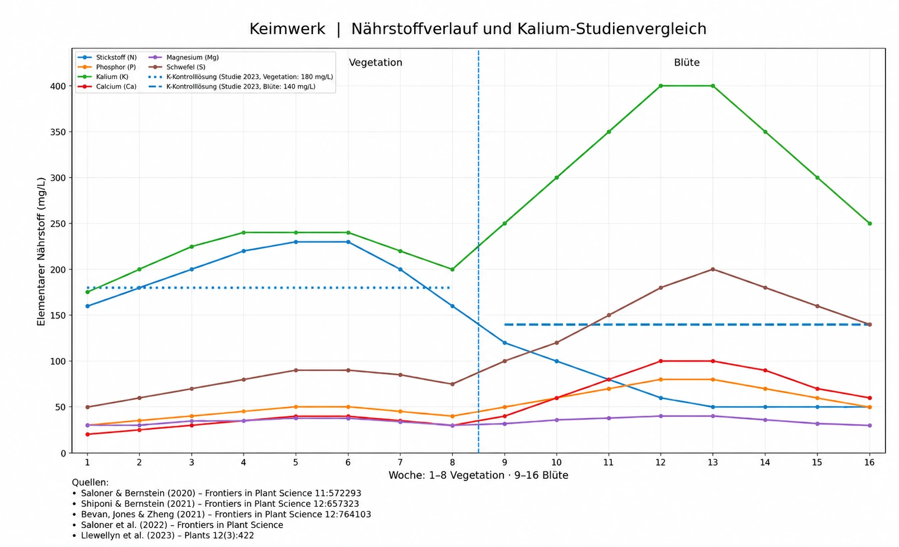
Keimwerk ist aus einer einfachen Idee entstanden: Pflanzenwissen soll nicht unnötig kompliziert sein.
Entscheidend ist, die Zusammenhänge hinter Beobachtungen zu verstehen.
Das Projekt soll Informationen nicht nur sammeln, sondern verständlich ordnen und dabei helfen, Wissen sinnvoll miteinander zu verbinden.
Gutes Wissen wächst mit Geduld, Beobachtung und der Bereitschaft, genauer hinzuschauen.
Ein Keim ist der Anfang von etwas, das sich entwickeln kann. Werk steht für die sorgfältige Arbeit, die in diesen Prozess fließt.
Wir entwickeln zuerst ein solides Fundament und ergänzen weitere Bereiche nach und nach. Jede Erweiterung soll einen klaren Zweck erfüllen.
Wir legen Wert auf Verständlichkeit, Übersicht und einen verantwortungsvollen Umgang mit Informationen.
Du hast einen Fehler entdeckt oder möchtest eine Verbesserung vorschlagen? Beschreibe kurz, worum es geht. So können wir Keimwerk Schritt für Schritt verbessern.
Hier speicherst du wiederverwendbare Anbau-Setups. Ein Grow-Projekt mit Tagebucheinträgen legst du im separaten Bereich Grow-Tagebuch an.
Speichere deine Anbau-Setups, lade sie später wieder und verwalte alle Profile an einem Ort. Die Daten bleiben in diesem Browser. Bestehende Profile bleiben kompatibel.
Hinweis: Das Speichern aktualisiert nur Grow-Profile. Ein verknüpftes Tagebuchprojekt wird nicht nachträglich verändert.
Dokumentiere deine Grow-Projekte, Fotos, Beobachtungen und Messwerte. Die Daten bleiben in diesem Browser und können exportiert und später wieder importiert werden.
Lege ein Grow-Projekt an und klicke auf Projekt speichern. Danach kannst du es öffnen und einzelne Tagebucheinträge hinzufügen.
Bearbeiten und Löschen findest du bei deinen gespeicherten Grow-Projekten unter „Meine Projekte“. Nach dem Öffnen eines Projekts kannst du auch einzelne Einträge bearbeiten oder löschen.
Noch keine Grow-Projekte angelegt.